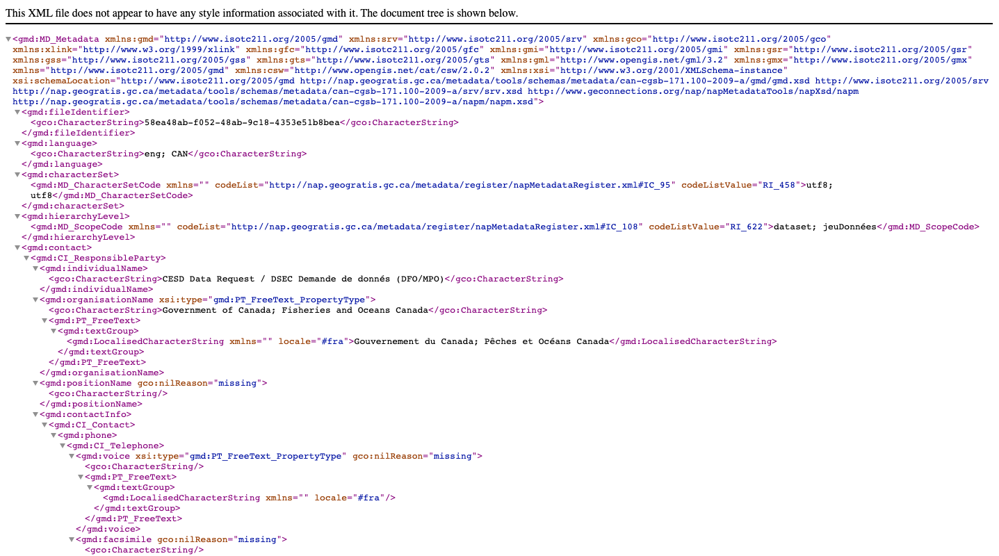

Download record
Multiple metadata records can be exported for download.
Download from search results
To select records from multiple search results:
Use the Search field at to enter: Accommodations

Search results for Accommodations
Use the checkboxes next to each record to select the contents for download.

Select records for download
At the top of the page the number of selected records is shown.
Next to the number of selected records is a selected drop-down, offering a number of export options for download.
Export (ZIP) archive including
xmlrecords along with any attachments and thumbnails.The resulting file includes:
Export (PDF) document of exported records.

Export PDF in Firefox
Export (CSV) download providing a tabular summary of exported records.
Export CSV

Download from record view
Download the contents of a single record.
Open the Accommodations record, showing a number of download options:

Record download options
Permalink provides a URL that can be shared via email or message.

Permalink to GEODBA.ACCOMMODATIONS record
Use Control-C to copy text to clipboard:

Permalink copied
Export (ZIP) archive including:
A folder containing complete
metadata.xmlrecord, and simplifiedmetadata-iso19139.xmlrecord.index.htmlandindex.csvsummary described in the previous section.

Export (ZIP) index.html summary
This file is useful for exchanging information between systems. The archive contents follows the Metadata Exchange Format convention used to share records between catalogs.
Export (PDF) document.

Export (PDF) document
Export (XML) machine readable document.
 XML download shown in FireFox
Export (RDF) machine readable definition of vocabulary used.
This file is useful for exchanging information between systems.